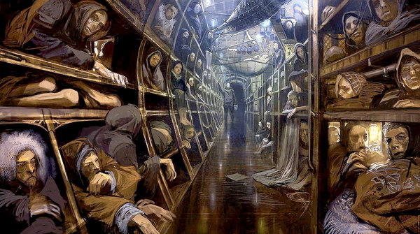
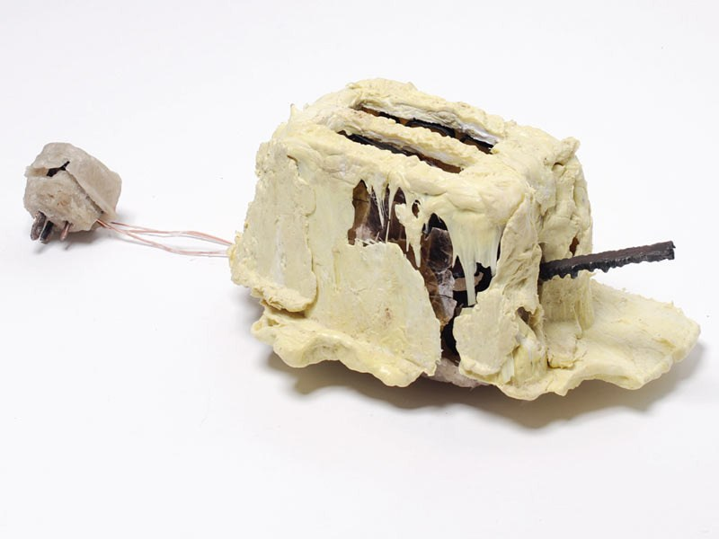
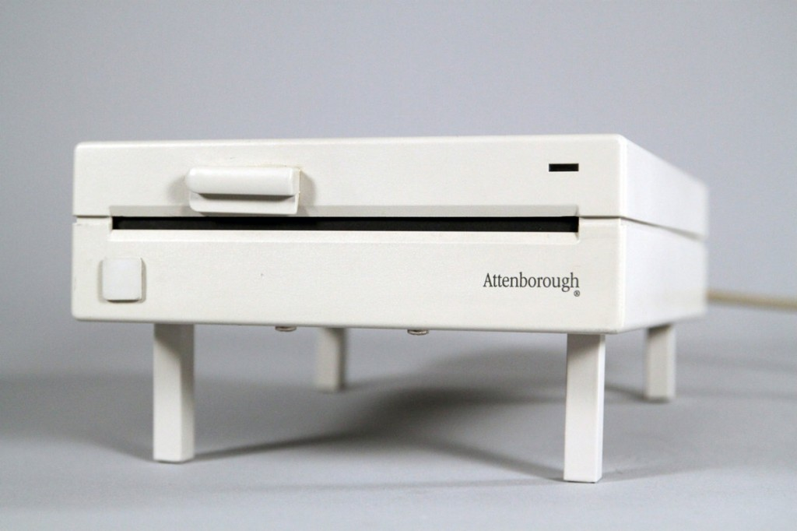

那些抽屉里最初的启发。
本篇是《Speculative Everything》的第五章的读书心得。
鲇鱼的世界
也许是我7岁的时候，我读过一篇相当难的童话故事，事实上，回想起来，那并不是一个充满快乐和阳光真正意义上的童话，我之后再也找不到这篇故事，但却依然记忆犹新。
它讲述了一个鲇鱼的世界，当人类从这个世界上消失，最终鲇鱼统治了世界，在某个海域的鲇鱼受尽了几百年的屈辱，突然有一位矮小的鲇鱼成为领袖，它让鲇鱼们排成行，它重新建立了国家的意义和使命感，这个鲇鱼部族最终强大，一步一步蚕食周边的鲇鱼们。那个鲇鱼领袖在他逐渐疯狂的行为中，引发了新的一次世界大战。
在这样一篇童话中，充满了政治意味的隐喻，从自由化到集权再到法西斯或斯大林主义，不确定它是否适合孩子观看，但是我读出了群体在同质化下的疯狂与破坏力，在我脑海里总能回想起那圆瞪着眼、黑着背、整齐密布的鲇鱼，以至于到后来，任何一边倒、众人声讨或喜欢的东西都会让我有些警觉和讨厌。
这就是虚构世界对我最初的影响，它解释了我这个不太能让人理解的世界。
为什么需要虚构世界
真实世界是为真实需求而存在，所有真实世界的设计起源于法规、道德、政治制度、价值、问题、希望、和担忧，它们一定是去解决某个问题或满足需要的，并基于某种形式的存在。
而虚构世界则存在于一个不可名状的环境之中，由深入其中的我们获得启示，这种启示是随机的，它的影响（即结果）也不是即时的，而是深藏在思维方式和行为模式中。
和其他孩子美妙的童话不同，鲇鱼的故事听起来黑暗晦涩，但却并未把童年的我变得阴沉孤僻，然而，它的启示却一直贯穿在我的行为模式中，并蕴育我的世界观。
就像启蒙时代的各种文学作品，并没有告诉改革者要做什么，而是种下种子，这样来自虚构世界的“启蒙”对于个人而言塑造独立的世界观，对于社会而言，是社会运动的开端。
此外，对于虚构世界的理解是模糊和怀疑的，有时坚信自己寻着真谛，有时又充分怀疑，它是多个虚构世界融合的结果。
这便是虚构世界的意义，一个抛开真实世界还能够思考的思维，才是真正完整的。
如同人与人的关系，当我抛开所有跟世俗的观点，我还能不能保有对你的欣赏。
如同社会发展的轨迹，当抛开一切规则与约定，这个社会还能不能独立的发展与运行。
无聊的真实世界
请不要会错我的意思，把我当成离群索居的孤独患者，我一样会喜欢精致的机器和器物、美妙的身体和食物，只是可惜的是真实世界正在无可避免的“同化”（Community）。
真实世界所有设计的出发点都源于人们最同化的需要，因此无论包装产品理念，获得多少设计大奖，人们所做的也不过是把设计设计成越来越像另外一个设计的样子。
同样的道理，人们所努力争取的，也是把自己设计成越来越像另外一个人的样子。
而人在真实世界的迷失是在于当人不断获得其所需要的设计，或者变成自己曾经想变成的自己，当真正完成喜悦之后的失落，让人重新寻找一个新的设计，或者一个新的自己；换句话说，重新寻找的是另一个设计、一个新的别人。
新的工具又让这个真实世界的趋同性变得更加残酷，人们为歌词感同身受而落泪，却无勇气写自己的故事；人们讨论着别人的人生并展示着自己的人生，而无智慧思考自己的世界。
鲜有人为异化（Identity）保有包容和支持，而对同化（Community）不自主地感同身受，这便是真实世界的无聊之处。
乌托邦和反乌托邦
狼狈的卡拉瓦乔厮混在1600年的罗马，10年后他便在不堪的生活中离世，作为画家，他只存在了10年。
狂乱所带来的是一种无以伦比的、从低贱腐烂中喷发的狂热。那笔下的圣母，既是基督之母，亦是罗马的妓女；那镶嵌在植物上的是腐烂的炭疽；铺满地面的是女人的经血和污秽。
疯狂攻击他的便是描绘罗马那些衣着体面的“天顶画家”，他们所描绘的景象是富足和美妙，我想这便是“乌托邦”式的想象吧。
而卡拉乔瓦所代表的，便是“反乌托邦”的抵抗。
《美丽新世界》与《1984》一样成为反乌托邦的经典名著。在这个虚构的故事里，亨利·福特被视为神明，人类的纪元从T型车上市的第一天算起。
在这样的一个社会里，所有人性都被消泯，用科学将人类进行划分和标注身份，所有人都有他们的使命，社会的箴言是“共有、统一、安定”。
尔后2014年电影《雪国列车》似乎亦是《美丽新世界》的重新演绎，包括科技崇拜、救世主偶像、通过某种形式抑制或者释放个性。

构建乌托邦的目的都是在讨论“什么是另外一种可能”，相反反乌托邦的构建却在讨论“为什么另外一种可能是行不通的”。两种都在某种情况下让人思考。
思维实验
思维实验是除虚构世界构建之外的设计方法。通常有三种类型的方式：
首先，是归谬法（Reductio Ad Absurdum）：首先加上命题成立，然后通过推理找到矛盾和不符合常理的事实，最后推导出命题不成立。
Thomas Thwaites在《面包机项目The Toaster Project》中为了让大家理解“我们周边的技术都是无比复杂并经历大量演进的”，尝试从0开始制造一台烤面包机，几个月时间里探访了英国的矿山、废料回收机构寻找铜铁塑料等材料，最终，这台面包机在通电五秒钟后，内部电路被烧坏（下图）。在TED上有Thomas的分享。

其次是，反常识法（Counterfactuals）：通过一种与常识相悖的设计实践产生一种奇怪但是意想不到、引人思考的设计结果。
设计师James Chamber邀请野生动物纪录片导演David Attenborough设计工业产品，最终David将动物的应激反应设计到硬盘上—当桌面有水的时候，硬盘会自动站起（下图）。

最后，假如法（What-ifs）：通过对一个假如场景的描绘和延伸，在真实感中产生思考和警觉。
Atelier Van Lieshout著名的《奴隶之城 SlaveCity-Cradle to Cradle (2005-)》描绘了一个完全用人类作为奴隶支持的城市，在这个设计里，人类和城市形成了倒置，人类反而成为支持城市生存的能源，它精确假设了城市的大小，所需能源对奴隶的要求。
世界观和设计思维
再一次，这并不是一个逃避世俗的犬儒主义的抱怨，虚构世界的存在帮助设计师形成自己的世界观，而一个存在且不断演化的世界观才能够帮助设计师产生独立的设计思维，无论真实世界如何变化，它都能保护自己不被同质化。
同时，虚构世界是想象力的实验室，无论真实世界发生什么都不应该停止想象力的构筑，那些令人艳羡的生活美景都该是帮助你启发和思考的索引，而不是让他人成为你的迷药。
设计思维最朴素的观点，是从迷思中获得启发，最终形成设计，这些也是Speculative Design所构建那些虚构世界的意义，它鼓励你一直保有那抽屉里的最初的想象和启发。